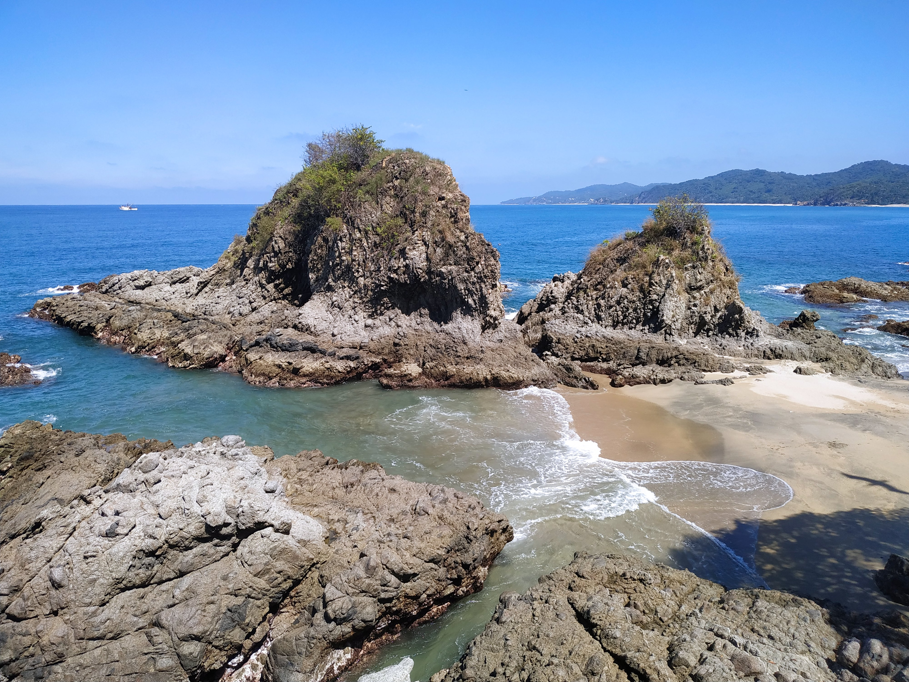

Mexico is home to some of the world's most beautiful beaches, with a
diverse range of beach experiences available. Keep reading for my
Mexican beach experiences!
Mexico's Caribbean cost, on the Yucatan peninsula, offers a diverse
range of experiences. Cancun and, increasingly, Playa del Carmen,
are cities dedicated almost entirely to tourism, and here you will
find any number of all inclusive resorts and luxury hotels. Further
to the south the town of Tulum is also a tourist hot-spot, although
with a slightly more alternative vibe, and a beautiful beach
overlooked by Mayan ruins perched atop the cliffs. I decided to skip
the crowds and stay near Xcalak, a small fishing village near the
border with Belize. Although there are several comfortable hotels in
the area, it has not been exploited in the same way as the coast
further north, and offers a much more authentic experience.
Snorkelling right off the beach, you can see many types of fish and
even turtles, or if you are more adventurous you can take a trip
with the local dive shop to the famous Chinchorro bank dive site.
The Costa MayanA turte at the beach at XcalakEntering the town of Xcalak
Sayulita
Sayulita is a town on Mexico's Pacific coast in the state of
Nayarit. Although not far from the famous tourist destination Puerto
Vallarta, Sayulita is a more relaxed, authentic option. While still
a popular tourist destination offering comfortable tourist
amenities, Sayulita still manages to retains a quaint beach village
vibe. Sayuliat town has two beach options, both beautiful and a
short walk from the centre of town: Playa Central has larger surf
while Playa de los Muertos has more sheltered water. However, my
advice is to hire a bike from the local bike shop and take a half
hour ride through the forest - you will end up at a rugged, palm
lined beach which you will have entirely to yourself.
Sayulita Town

One of the beaches at Sayulita
Deserted beaches are just a bike ride away
Bacalar and the Cenotes
Although not technically beaches, while you are searching for water
and sun in the Yucatan Peninsula you cannot miss Lake Bacalar and
the cenotes.
Bacalar is a freshwater lake located near the border with Belize in
the Yucatan Peninsula, known as the 'lake of seven colours' for its
varyied and striking shades of blue. You can swim in its cristaline
blue waters and enjoy a sunsoakd, ceviche-eating day on its shores,
or take a boat trip to appreciate its curious changes in colour. In
the area you can also visit a colonial fort built by the Spanish as
protection against pirates, visit Mayan cultural sites or the local
cenotes.
The cenotes, which can be found throughout the Yucatan, are
sandstone sinkholes filled with cristaline freshwater. The cenotes
were a key source of freshwater for the Mayans, who also believed
that they were an access to the underworld. Diving in the cristaline
cenotes is a highly recommended experience
Bacalar, the 'Lake of seven colours'Sunrise on the shores of BacalarCenote Nah Yah, near Merida, Mexico